Home
Laser Interference Pattern Enumerator
Aug 16, 2009

Counting Laser Diffraction & Interference Patterns Using LDR (Photoresistor)
Michelson Interferometer is best used in calculating the index of refraction of gasses and transparent matter
(i.e. air and glass). Doing so requires counting each interference circle one by one. As a matter of fact, getting
a precise measurement requires counting up to a hundred circles which is almost impossible because circles move quite fast even when the measurement arm is winded as slow as possible. Even though it is quite hard for human eyes to follow such rapid
movement, it makes a fairly easy Optoelectronics application. For that reason, I have designed an enumerator (image on top) for
our lab, as a final project for Linear Electronics II class. Even though I have built the box for counting laser interference and diffraction patterns, it can enumerate all sorts of patterns given there is enough light. Personally, I have successfully
counted patterns on a wooden desk, a very fine wire grid, a stamped concrete wall, and even the patterns on a Turkish carpet. Using the adjustment buttons gives the ability to adjust the circuit to any possible pattern transition thus making it useful
for counting all kinds of patterns on any object.
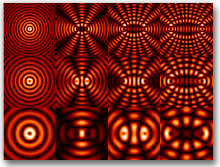For counting laser interference patterns like the ones to the right, this project provides an excellent resource. Not only will it be able to enumerate through the patterns at lightning speed (my LDR provided me with 30 switches per second), but it
will also provide you with utmost tool for counting any other pattern and count them quite precisely.
As I took a very straightforward approach into this design, the project content is below and all in one page, as you will easily be able to print this page and use it as a guide.
1. Resources
2. Ultimate Documentation: My Project Report
2.1 Where to Find It?
2.2 2009 IEEE Standards Style Manual
3. Hardware Design (everything about what goes in the box)
3.1 Schematics & Simulation
3.2 Circuit Design
3.3 Project Casing
3.4 Test Setup
4. Components (optional reading for in depth info)
5. Calibration Guide & User's Manual
6. Special Thanks
1.
Resources
If you ever intend to rebuild this project for your own use, below box contains every single file you need (schematics, simulation, documentation, etc.).
Complete Circuit Diagram If you need,
here
is the same diagram as Labcenter Proteus format which can be simulated (.DSN). You can get a trial of Labcenter Proteus
here
.
Sample Report Nice demonstration w/ Michelson Int. and this enumerator device.
2.
Ultimate Documentation: My Project Report
As usual, every final project is accompanied by a great project report (to get a reward for all that hard work). The report itself is the ultimate documentation for this project as it contains an in depth analysis of the problem and the solution as
well as the methods and tools used in the process. Although I have written the report all in Turkish (except the cover) as it was due submission to archives too, I tried to put as much information from it into the web page as possible. This page contains
all the information needed to understand the project in depth and replicate it if needed but very specific information about the components used in the project are all in the project report. If you need, you can translate the .pdf file with Google
translator from Turkish to English.
2.1
Where to Find It?
Above in the resources box or on your left.
2.2
2009 IEEE Standards Style Manual
Any engineer’s guide to technical writing is IEEE’s “Standards Style Manual” (at least for electrical and computer related stuff). You can always find the latest
version here (or the 2009 version local copy here).
As it is a bit time consuming to get your report in IEEE’s shape, I personally use University of Sussex’s “Guide to Technical Report Writing” (local copy here)
or when I am completely short of time I prefer something a lot more easier like MIT’s digital systems lab report guide (local copy here). Just for your information (as this is a question that I receive daily especially from the readers of my articles such
as this one here).
3.
Hardware Design
Again, all the files you will need if you even want to rebuild this project is posted above in the resources box. They are also presented in text, in case you missed something.
3.1
Schematics & Simulation
Above is the complete schematics in .png format (click on the image for full size). The above circuit diagram is drawn with Labcenter Proteus, which provides full simulation features for this sort of circuits. Look at how the light source and LDR are
simulated. You can easily move the light source away from or towards the
LDR and see how the circuit reacts to changes in light intensity (as in pattern transitions like moving from darker side of a pattern to a lighter portion of it). One full cycle (moving from dark to light and then back to dark) will act
as a trigger and counter will increment by one. If you want to test it for yourself, here is the full schematics file in .DSN format, which you will need at least
a demo version of Labcenter Proteus VSM suite which can be downloaded here.
You can see that I chose 4026 counter and display decoder from CMOS 4000 series as it is one of the best ICs out
there to provide counter and decoder functions in a single package. Each one of the chips has the ability to count up to 9 (including zero). Using three of them gives (10*10*10)-1=999 which is more than enough for counting repeating patterns like
that of laser interference. If you want, you can read the "Components" section below for in depth info about the components used in this circuit diagram (i.e. 4026, LDR, Linear POT, 7-segment LED, etc.). Note that this circuit
is meant to work with a default 5V input but in reality, anything between 3V to 15V will be all right (i.e. 4xAA batteries for my case).
3.2
Circuit Design
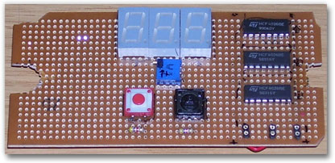Even though Labcenter Proteus software allows easily converting circuit diagrams into
PCB layouts, I decided to use a basic stripboard with copper soldering pads on each hole (which is actually called a perfboard). This way I avoided going to an electronics shop to print the circuit board. This is a relatively simple circuit
so stripboard fits in nicely but anyone intending to go with the PCB, demo version of Proteus can be used to convert the circuit diagram into a circuit board.
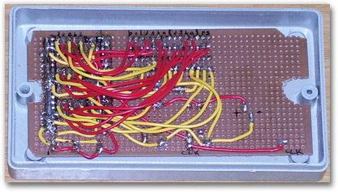
The entire circuit diagram can be fitted into a single piece of 11x6 cm (~4.3x2.4 in) stripboard. Above picture displays the whole counter circuit in place (which is actually the whole digital part of this circuit). You can easily find generic plastic
boxes for each stripboard size in many electronics shops. The picture on the left shows how nicely the board fits into its box after come shaping on the corners and in the middle.
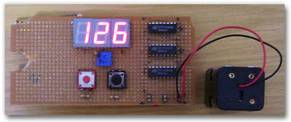
This circuit is obviously an analog digital mixed one. Thus, it is always a good idea to test the two separate parts where possible. On the stripboard, I have implemented the digital portion first. It is quite easy to see if the digital counter functions
all right, with the “+1” button. You can also see that I have added a trimpod between the cathodes of the LEDs and the circuit ground. This way it is easier to adjust the brightness of the LEDs though not necessary as I used 4xAA series batteries
as the power source.
3.3
Project Casing
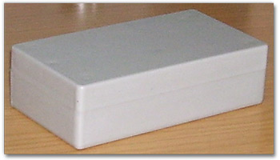
For the project casing, I recommend a rectangular box that fits the stripboard on the sides. That way, it will not be obligatory to glue the board to the box but simply screw through it. Actually, below image is quite self-explanatory.
 In this final image, you can see that bolts and nuts are used to fasten the circuit board to the front panel of the project casing. Of course, you will need to drill the holes in the front panel first before placing the board on it. I personally prefer
using hot soldering iron for any cutting and drilling business. That does not exactly give the best results, as it is obvious from the topmost image of the complete project; it is a pretty fast method for prototyping purposes like this one. You will
note with this final image that the circuit is complete. Once the digital portion of it is done, analog sensor part is quite fast to integrate being loyal to the schematics. Though drilling the stripboard for POTs may be a bit tricky because it is
easily broken, so be careful. Sorry that I cannot give detailed instructions on mechanical parts as it is mostly up to your abilities to accomplish all these drilling and cutting business w/ limited tools.
In this final image, you can see that bolts and nuts are used to fasten the circuit board to the front panel of the project casing. Of course, you will need to drill the holes in the front panel first before placing the board on it. I personally prefer
using hot soldering iron for any cutting and drilling business. That does not exactly give the best results, as it is obvious from the topmost image of the complete project; it is a pretty fast method for prototyping purposes like this one. You will
note with this final image that the circuit is complete. Once the digital portion of it is done, analog sensor part is quite fast to integrate being loyal to the schematics. Though drilling the stripboard for POTs may be a bit tricky because it is
easily broken, so be careful. Sorry that I cannot give detailed instructions on mechanical parts as it is mostly up to your abilities to accomplish all these drilling and cutting business w/ limited tools.
3.4
Test Setup
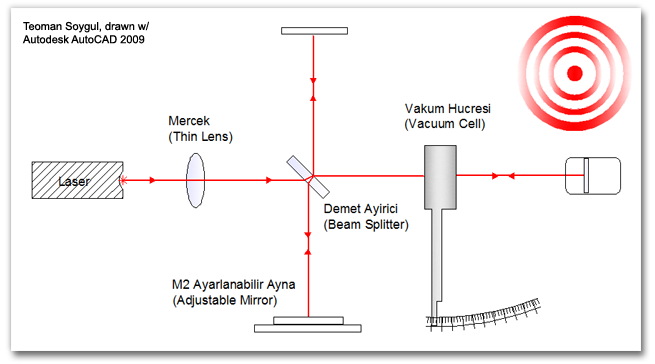
For the purposes of this project, one of the best ways to test the integrity of all the circuit is to use a real pattern generator like Michelson Interferometer. Counting all the patterns combined with the correct formulation provides a basic method
for calculating the index of refraction of gaseous matter (i.e. air) or transparent matter (i.e. crown glass). The above diagram is the most basic form of Michelson Interferometer that best suits this job. The sample pattern on the right corner is
the one you should be seeing while using this device (pretty commonly used in optics labs). Using the pattern enumerator, counting the number of circles disappearing and reappearing in the middle of the screen is quite easy. Since the sensitivity
of the detector can be easily re-adjusted and bright spot in the middle of the screen creates a very nice pattern transition section,
taking measurements right there is quite easy. Measuring the index of refraction of a matter with an already known
n provides the best means of testing the functionality of our newly built pattern counter. The sample lab report to the left is a solid example of how to make the best use of this pattern enumerator in optics. The basic principle used throughout
the calculations in the report is the fact that number of circles passing through a single point on the screen is directly related to the change in the index of refraction of de-pressurized air in the pressure chamber. Such that:
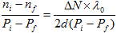
For situations where this project is built for other purposes than using it in conjunction to an interferometer, any simple dark-light test will tell you something about how well your circuit is responding to light intensity changes (thus pattern transitions,
which is what you want). Below video depicts such a case, where a single torch is used as a test case. Simply waving the torch right before the sensor is enough to tell if the counter if functional. Since every other LDR comes with different saturation/de-saturation
timing characteristics, combining a couple of torches and creating a cascaded effect will be of great help in measuring the response speed in terms of switches per second.
4.
Components
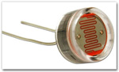The choice of using a LDR (light dependent resistor, photoresistor) as the light sensing component of this circuit is based entirely on the response characteristics. LDR has a pretty rapid response to changes in the light intensity which makes it
an ideal choice for this project. In addition, since LDR has way lower resistance compared to photodiode when fully illuminated.
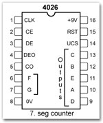4026 counter/decoder chip is basically the most important digital part in this circuit. As it is a
CMOS series of chip, it has a very wide range of operation in terms of input voltage. Any input voltage between 3V and 15V will be sufficient for this chip to be fully functional (anything above 20V will fry the chip). For that reason, I
didn’t specify the input voltages in the schematics. 4xAA batteries, any 6V - 12V wall adapter, or a cell phone charger will be more than enough. As with any CMOS chip, 4026 have very high impedance at input pins. Due to that reason, any input pin
left without a connection will float freely (i.e. it will rapidly switch between 0 and 1). To prevent that, any unused input should be connected to circuit ground. If you remain loyal to the provided circuit diagram, there should be no problem in
this compartment.
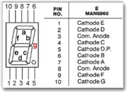The pinout diagram on the right is provided for a common anode 7 segment led display. For this project, I have used common cathode display, which is only the cathode/anode reversed version. This was necessary because 4026 outputs positive signal (ex:
+5V). So anyone intending to rebuild this project should go with “common cathode 7-seg led displays” (3 of them).
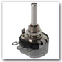
As for the light intensity calibration purposes, two 10K linear POTs are used like the one on the right are used. First POT is connected in series with the LDR and is used for filtering the ambiance light, hence the question; “How dark is dark?”.
For situations where readings will not be taken from patterns projected on the screen but the patterns will be counted on real surfaces (like a metal board or even a stonewall or a cat’s fur!), adjusting this pot fine tunes the circuit to “sense”
the darker portion of the pattern and differentiate it from the brighter side (in electronic sense, you are just adjusting the resistance of the
CLK pulse threshold in terms of Ohms as seen from the circuit diagram). As you could guess, sensing this darker portion of the pattern will generate a digital equivalent of “0”. The second POT is used to adjust the circuit to match the brightness
of the lighter side of the pattern or the intensity of the laser used (basically you are adjusting the value of the pull-down resistor). The first setting (the blue switch) is less crucial but it is still useful in situations where the darker side
of the pattern is actually not that dark which may be due to faded colors or ambiance light. In most cases, just adjusting the second (red) switch and leaving the blue switch at "MIN" will be enough.
(see the calibration guide below for details)
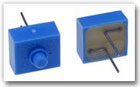Finally, two momentary action SPST (single pole single throw) switches are used as “+1” and “Reset” buttons. “+1” button is especially useful for testing the functionality of the device before starting to take any measurements. These are very common
and very easy to find buttons and can be used without any additional cover (like I did).
5.
Calibration Guide & User's Manual
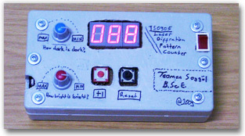Actually I have already said enough about how to use the blue and red calibration switches on the device, above in the components section where I explained the purposes of the POTs used in the circuit. These two calibration
switches adjust the circuit’s sensitivity to the intensity of darkness and brightness. To begin the calibration, turn the two switches clockwise all to the way to the “MIN” labels. Then move the sensor so that it directly faces the bright spot in
the middle of the interferometer interference circles (or in case or regular pattern counting, move the sensor to the brighter side of the pattern). Making sure that the device is all stable, start turning the red switch counterclockwise towards the
“MAX” label. Along the way, the counter will increment by one. That exact point is the one that makes your circuit best fit for sensing the bright spot. Do not move the counter from its position because you will be repeating the same process with
the blue switch. Again, the counter will increment by one at somewhere going counterclockwise. This means that it is needed to calibrate both of the switches only when viewing the maximum light (or brightest region of the pattern). The reason that
you are adjusting both of the dark and bright calibration option while the device faces the brightest spot (or brightest half of the pattern) is due to the fact that the sensing circuit best functions at the two edges of the pattern transition regions.
I know this sounds a bit complex and you are free to add your questions below using the comment form.
CMOS circuitry is highly sensitive to static electric, which every plastic casing will be invulnerable to. Due to this, your counter may sometimes go crazy in the middle of a measurement due to static electric charge. Just to be on the safe side, clear
your counter a couple of times using the “Reset” button before taking any measurements as it grounds all the CMOS chips and LEDs in the circuit which will prevent any inconvenience.
As for the batteries, the device consumes 25mA @ 5V on average so generic 2000 mAh rechargeable batteries should provide you with 80 hours of runtime. Due to this, it may be a waste to use expensive rechargeable batteries and go with alkaline batteries.
The case can easily be unscrewed to replace the batteries once in every couple of years.
6.
Special Thanks
I would like to thank Avni Aksoy Ph.D., Ulaş Kürüm Ph.D., and my advisor Prof. Dr. Necmi Serin for their unprecedented
support in this year’s never-ending projects.
{kind=link}
{kind=link}
{kind=link}
{kind=link}